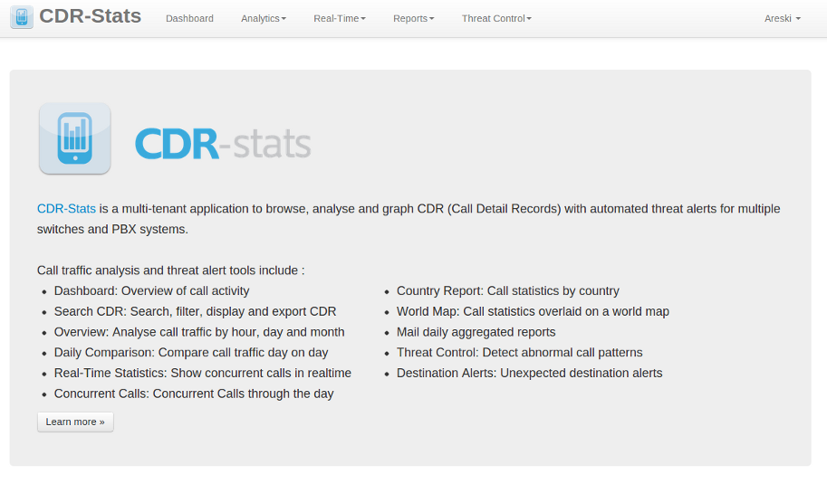
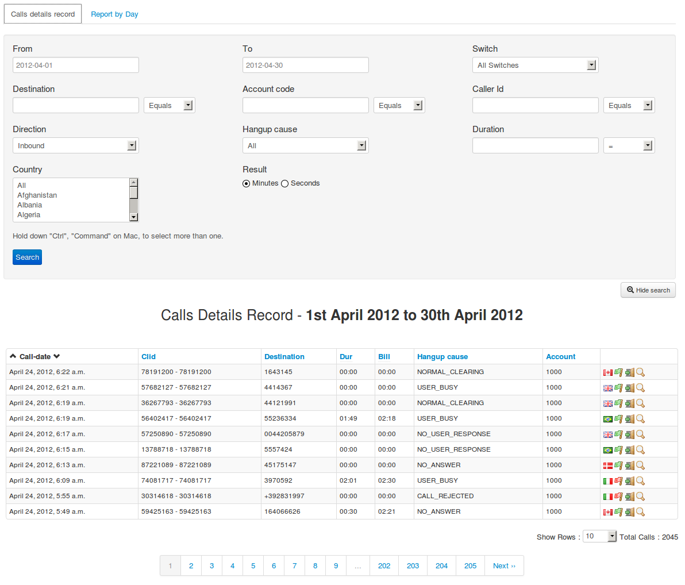

Customer Panel¶
User Interface :
This application provides a user interface...
Screenshot with Features¶
Index¶
Index page for the customer interface after successful login with user credentials
Dashboard¶
The dashboard displays a graphical representation of the last 24 hours calls, call status statistics and calls by country, either agregrated for all switches, or selectable by switch.
URL:

CDR-View¶
Call detail records listed in table format which can be exported to CSV file.
Advanced Search allows further filtering and searching on a range of criteria
The Report by Day shows a graphical illustration of the calls, minutes and average call time.
URL:


CDR-Overview¶
In this view, you can get pictorial view of calls with call-count or call-duration from any date or date-range
URL:
CDR-Hourly-Report¶
In this view, you can get hourly pictorial view of calls with call-count & call-duration. You can compare different dates
URL:

CDR-Country-Report¶
In this view, you can get pictorial view of all calls by country. Also you can have 10 most called countries name with pie chart
URL:
Mail-Report¶
In this view, there is a list of the last 10 calls of the previous day, along with total calls, a breakdown of the call status, and the top 5 countries called.
URL:

Realtime-Report¶
In this view, you can monitor in realtime the traffic on your voip servers. Currently, only Freeswitch is supported.
URL: